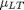
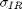
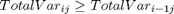

EQUITY IMPLIED VOLATILITY
FORWARD VOLATILITY EXTRAPOLATION
The main purpose of this class is to interpolate and extrapolate a raw volatility surface using an exponential smoothing method applied to the forward volatilities, on a forward strike basis. In order to further avoid calendar arbitrage issues we ensure throughtout the precess that total variance is monotonic increasing for each strike.
Note the current method does not prevent convexity arbitrage.
Contents
- How to Use the Class
- Properties
- List of Methods
- Details of Methods
- 1) [CreateExtrapolatedSurface()]
- 2) [ExponentialExtrapolation()]
- 3) [RawVolatilitySurfaceAdj()]
- 4) [SplitMaturityOutputProfile()]
- 5) [CreateFwdVolSurfaceFromSpotVolSurface()]
- 6) [CreateSpotVolSurfaceFromFwdVolSurface()]
- 7) [CreateSpotVolSurfaceBiLinearInterpolation()]
- 8) [MonotonicColumnCorrection()]
- 9) [CreateContStatsFromArithmeticStats()]
%MATLAB CODE %%%%%%%%%%%%%%%%%%%%%%%%%%%%%%%%%%%%%%%%%%%%%%%%%%%%%%%%%%%%%%%%%%%%%%%%%%% classdef bsEquityForwardVolExtrapolation
How to Use the Class
Given a spot implied volatility surface, the method [CreateExtrapolatedSurface()] returns an extrapolated spot implied volatility surface.
The rest of the methods are the key steps of [CreateExtrapolatedSurface()]. Each method can be called separately, as a function call.
Properties
These are global parameters which are available to all methods in this class. They are all single values.
[EquityFwdVol_LongTerm_MeanReturnTarget] - , mean of log return in the long term
[EquityFwdVol_LongTerm_ReturnVolTarget] - , standard deviation of log return in the long term
[EquityFwdVol_MeanReversionSpeed] - , represents the speed with which the standard deviation of returns reverts to its long term level. It controls the exponential decay from the last liquid point to the long-term target
[LastLiquidMaturity] - maximum maturity at which equity volatility is liquid
[minLiquidStrike] - Minimum moneyness at which equity volatility is liquid
[maxLiquidStrike] - Maximum moneyness at which equity volatility is liquid
[TimeTolerance] - permissible limit of variation,
[StrikeTolerance] - permissible limit of variation,
[IRMeanReversionSpeed] - Rate at which the short rate reverts back to mean
[IRVolatility] - Interest rate volatility 
[Equity_IR_Correlation] - Correlation between equity and interest rate
%MATLAB CODE %%%%%%%%%%%%%%%%%%%%%%%%%%%%%%%%%%%%%%%%%%%%%%%%%%%%%%%%%%%%%%%%%%%%%%%%%%% properties EquityFwdVol_LongTerm_MeanReturnTarget EquityFwdVol_LongTerm_ReturnVolTarget EquityFwdVol_MeanReversionSpeed LastLiquidMaturity minLiquidStrike maxLiquidStrike TimeTolerance = 1E-08 StrikeTolerance = 1E-08 IRMeanReversionSpeed IRVolatility Equity_IR_Correlation end %%%%%%%%%%%%%%%%%%%%%%%%%%%%%%%%%%%%%%%%%%%%%%%%%%%%%%%%%%%%%%%%%%%%%%%%%%%
List of Methods
This bootstrap class introduces the following methods:
1) [CreateExtrapolatedSurface()] - Function linear interpolates all maturities less than or equal to last valid option matrurity as defined by the last market data point. For maturities above this point we extrapolate using the exponential method
2) [ExponentialExtrapolation()] - Function exponentially extrapolates a set of initial values to a long term [MeanReversionLevel]
3) [RawVolatilitySurfaceAdj()] - Function removes rows of the VolatilitySurface which are greater than the last market liquid point [LastLiquidMaturity]
4) [SplitMaturityOutputProfile()] - Function split the VolatilitySurface in two portions. One portion is below the last liquid point, the other above
5) [CreateFwdVolSurfaceFromSpotVolSurface()] - Function turns a Spot Volatility Surface into a Forward Volatility Surface
6) [CreateSpotVolSurfaceFromFwdVolSurface()] - Function transforms a Forward Volatility Surface into a Spot Volatility Surface
7) [CreateSpotVolSurfaceBiLinearInterpolation()] - Function bi-lnearly interpolates the total spot variance surface and then converts the interpolated spot total variance surface into a spot volatility surface
8) [MonotonicColumnCorrection()] - Function ensures that the columns on the matrix are montonic increasing. If an entry is found to be lower than the previous row value then it will be replaced by the previous row value. The method removes the possibility of a calendar spread arbitrage for a given strike.
9) [CreateContStatsFromArithmeticStats] - Function uses a lognormal approximation to convert arithmetic return statistics to continuous (geometric) return statistics
%MATLAB CODE %%%%%%%%%%%%%%%%%%%%%%%%%%%%%%%%%%%%%%%%%%%%%%%%%%%%%%%%%%%%%%%%%%%%%%%%%%% methods
function obj = bsEquityForwardVolExtrapolation (... EquityReturn_ArithmeticMean,EquityReturn_ArithmeticVol, ... EquityFwdVol_MeanReversionSpeed,LastLiquidMaturity,minLiquidStrike,... maxLiquidStrike,IRMeanReversionSpeed,IRVolatility,Equity_IR_Correlation) [obj.EquityFwdVol_LongTerm_MeanReturnTarget, ... obj.EquityFwdVol_LongTerm_ReturnVolTarget] ... = obj.CreateContStatsFromArithmeticStats(EquityReturn_ArithmeticMean,... EquityReturn_ArithmeticVol); obj.EquityFwdVol_MeanReversionSpeed = EquityFwdVol_MeanReversionSpeed; obj.LastLiquidMaturity = LastLiquidMaturity ; obj.minLiquidStrike = minLiquidStrike; obj.maxLiquidStrike = maxLiquidStrike; obj.IRMeanReversionSpeed =IRMeanReversionSpeed; obj.IRVolatility = IRVolatility; obj.Equity_IR_Correlation =Equity_IR_Correlation; end %%%%%%%%%%%%%%%%%%%%%%%%%%%%%%%%%%%%%%%%%%%%%%%%%%%%%%%%%%%%%%%%%%%%%%%%%%%
Details of Methods
_______________________________
1) [CreateExtrapolatedSurface()]
'''''''''''''''''''''''''''''''''''''''''''''''''''''''''''''''''''''''''''''''''''''
Description
Function Linear interpolates all maturities less than or equal to last valid option matrurity as defined by the last market data point. For maturities above this point we extrapolate using the exponential method applied to the forward variance, i.e. (forward volatility)^2.
Inputs
[VolatilitySurface] - A surface of spot implied volatilites with "maturity" against "moneyness"
Data Type: 2-dim array
[OptionMaturities] - Input maturities of the equity options
Data Type: 1-dim array
[StrikeMoneyness] - Input equity option strikes in terms of moneyness
Data Type: 1-dim array
[OutputMaturityProfile] - Output maturities of the equity options
Data Type: 1-dim array
[OutputStrikes] - Output equity option strikes in terms of moneyness
Data Type: 1-dim array
[Truncate] - whether to truncate the volatility matrix: 'True' or 'False'
Data Type: String
Outputs
[CreateExtrapolatedSurfaceReturn] - An extrapolated spot implied volatility surface with "maturity" against "moneyness"
Data Type: 2-dim array
Calculation
STEP 1: Remove illiquid strikes and maturities using function [RawVolatilitySurfaceAdj()] to get a [ReducedVolatilitySurface]. See [RawVolatilitySurfaceAdj()] for details
STEP 2: Split Option Maturity Profile into two using the function [SplitMaturityOutputProfile()]. One portion is below the last liquid point [OutputMaturityProfileBelow], and the other above [OutputMaturityProfileAbove]. See [SplitMaturityOutputProfile()] for details
STEP 3: Interpolate [ReducedVolatilitySurface] using a bilinear total variance rule. See [CreateSpotVolSurfaceBiLinearInterpolation()] for detailed calculation
STEP 4: Remove Stochastic Interest Rate Effect from the spot implied volatilities to get the idiosyncratic volatility surface by calling the bootstrap method [bsEquityIV_1FHW_StochRateEffect]. See the class for details
STEP 5: For maturities above the last liquid point, create the first half forward volatility surface [ForwardVolSurfaceOne] using the function [CreateFwdVolSurfaceFromSpotVolSurface()]
STEP 6: Given the [ForwardVolSurfaceOne] obtained from STEP 5, for maturities below the last liquid point, creat the second half forward volatility surface [ForwardVolSurfaceTwo] by extrapolating from the last forward volatility for each strike using the exponential rule applied to the forward variance. See [ExponentialExtrapolation()] for calculation details
STEP 7: Combine the two foward volatility surfaces from STEP5 and STEP6 to give us a [CombinedForwardVolSurface]
STEP 8: Convert the [CombinedForwardVolSurface] back to a spot idiosyncratic volatility surface [CombinedSpotVolSurface] using the function [CreateSpotVolSurfaceFromFwdVolSurface()]
STEP 9: Finally, we call the bootstrap method [bsEquityIV_1FHW_StochRateEffect] again to create a spot implied volatility surface [CreateExtrapolatedSurfaceReturn] by adding back the stochastic interest rate effect to the [CombinedSpotVolSurface]
%MATLAB CODE %%%%%%%%%%%%%%%%%%%%%%%%%%%%%%%%%%%%%%%%%%%%%%%%%%%%%%%%%%%%%%%%%%%%%%%%%%% function CreateExtrapolatedSurfaceReturn = CreateExtrapolatedSurface... (obj, VolatilitySurface, OptionMaturities, StrikeMoneyness, ... OutputMaturityProfile, OutputStrikes, Truncate) % STEP1 [ReducedVolatilitySurface,ReducedOptionMaturities,... ReducedStrikeMoneyness] = obj.RawVolatilitySurfaceAdj ... (VolatilitySurface, OptionMaturities, StrikeMoneyness); % STEP2 [OutputMaturityProfileBelow,OutputMaturityProfileAbove] = ... obj.SplitMaturityOutputProfile (OutputMaturityProfile); % STEP3 InterpolatedSpotSurface = ... obj.CreateSpotVolSurfaceBiLinearInterpolation ... (ReducedVolatilitySurface, ReducedOptionMaturities, ... ReducedStrikeMoneyness, OutputMaturityProfileBelow, ... OutputStrikes, Truncate); % STEP4 newEquityStochRates = Bootstrap.bsEquityIV_1FHW_StochRateEffect... (obj.IRMeanReversionSpeed, obj.IRVolatility, ... obj.Equity_IR_Correlation); InterpolatedSpotSurfaceNoStochIR = ... newEquityStochRates.FindEquityVolSurface ... (InterpolatedSpotSurface, OutputMaturityProfileBelow); % STEP5 ForwardVolSurfaceOne = CreateFwdVolSurfaceFromSpotVolSurface ... (obj, InterpolatedSpotSurfaceNoStochIR, ... OutputMaturityProfileBelow) ; % STEP6 ForwardVolSurfaceTwo = obj.ExponentialExtrapolation ... (ForwardVolSurfaceOne(end, :).^2, ... obj.EquityFwdVol_MeanReversionSpeed, ... (obj.EquityFwdVol_LongTerm_ReturnVolTarget)^2, ... (OutputMaturityProfileAbove- obj.LastLiquidMaturity)) ; ForwardVolSurfaceTwo = ForwardVolSurfaceTwo .^ 0.5; % STEP7 CombinedForwardVolSurface = [ForwardVolSurfaceOne; ... ForwardVolSurfaceTwo]; % STEP8 CombinedSpotVolSurface = obj.CreateSpotVolSurfaceFromFwdVolSurface... (CombinedForwardVolSurface, OutputMaturityProfile); % STEP9 CreateExtrapolatedSurfaceReturn = ... newEquityStochRates.GetEquityImpliedVolSurface ... (CombinedSpotVolSurface, OutputMaturityProfile); end %%%%%%%%%%%%%%%%%%%%%%%%%%%%%%%%%%%%%%%%%%%%%%%%%%%%%%%%%%%%%%%%%%%%%%%%%%%
_______________________________
2) [ExponentialExtrapolation()]
'''''''''''''''''''''''''''''''''''''''''''''''''''''''''''''''''''''''''''''''''''''
Description
Function Exponentially extrapolates a set of initial values to a long term [MeanReversionLevel]
Inputs
[InitialValues] - An array of initial values against initial maturities e.g. spot implied volatility surface with maturities from 1 to 10 year
Data Type: 2-dim array
[MeanReversionSpeed] - , represents the speed with which the standard deviation of returns reverts to its long term level
Data Type: single value
[MeanReversionLevel] - - Target value in the long term
Data Type: single value
[Maturities] - Output maturities
Data Type: 1-dim array
Outputs
[ExponentialExtrapolationReturn] - An array of extrapolated values against output maturities. e.g. spot imlied voaltility surface with maturities from 1 to 50 year
Data Type: 2-dim array
Calculation
Let be the extrapolation return for the initial value , MeanReversionLevel , maturity and moneyness , then
%MATLAB CODE %%%%%%%%%%%%%%%%%%%%%%%%%%%%%%%%%%%%%%%%%%%%%%%%%%%%%%%%%%%%%%%%%%%%%%%%%%% function ExponentialExtrapolationReturn = ExponentialExtrapolation ... (obj,InitialValues, MeanReversionSpeed, MeanReversionLevel, ... Maturities) exponentialweights = exp(-MeanReversionSpeed.*Maturities); ExponentialExtrapolationReturn = exponentialweights'*InitialValues... +(1-exponentialweights)'*MeanReversionLevel*ones(size(InitialValues)); end %%%%%%%%%%%%%%%%%%%%%%%%%%%%%%%%%%%%%%%%%%%%%%%%%%%%%%%%%%%%%%%%%%%%%%%%%%%
_______________________________
3) [RawVolatilitySurfaceAdj()]
'''''''''''''''''''''''''''''''''''''''''''''''''''''''''''''''''''''''''''''''''''''
Description
Function removes rows of the VolatilitySurface which are greater than the last market liquid point [LastLiquidMaturity]
Inputs
[VolatilitySurface] - A surface of volatilites with "maturity" against "moneyness"
Data Type: 2-dim array
[OptionMaturities] - Input maturities of the equity options
Data Type: 1-dim array
[StrikeMoneyness] - Input equity option strikes in terms of moneyness
Data Type: 1-dim array
Outputs
[ReducedVolatilitySurface,ReducedOptionMaturities,ReducedStrikeMoneyness] - three arrays: [ReducedOptionMaturities] is a 1-dim array of marturies with the maturities longer than the last liquid maturity removed; [ReducedStrikeMoneyness] is a 1-dim array of strike moneyness with the strikes outside the liquid strikes removed; [ReducedVolatilitySurface] is a 2-dim array of the resulting volatility surface with reduced maturities against reduced moneyness
Data Type: three arrays, one 2-dim and two 1-dim
Calculation
Locate the positions of the last liquid maturity and the minimum and the maximum strikes that are liquid. Remove the rows and the columns of the input volatility surface that are beyond those liquid points.
%MATLAB CODE %%%%%%%%%%%%%%%%%%%%%%%%%%%%%%%%%%%%%%%%%%%%%%%%%%%%%%%%%%%%%%%%%%%%%%%%%%% function [ReducedVolatilitySurface,ReducedOptionMaturities, ... ReducedStrikeMoneyness] = RawVolatilitySurfaceAdj (obj, ... VolatilitySurface, OptionMaturities ,StrikeMoneyness) assert( size( VolatilitySurface ,1) == size( OptionMaturities, 2)); assert( size( VolatilitySurface ,2) == size( StrikeMoneyness, 2)); % Remove columns which are less than or greator than % respective last liquid point of the vol surface llpstrike_maturity_index = find ((OptionMaturities - ... obj.LastLiquidMaturity) > obj. TimeTolerance); if isempty(llpstrike_maturity_index) llpstrike_maturity_index = size(OptionMaturities, 2) ; else llpstrike_maturity_index = max(llpstrike_maturity_index(1,1)-1,0); end llpstrike_min_index = find((StrikeMoneyness - obj.minLiquidStrike)... < - obj.StrikeTolerance); if isempty(llpstrike_min_index) llpstrike_min_index = 1; else llpstrike_min_index = min(llpstrike_min_index +1, ... size(StrikeMoneyness,2)); end llpstrike_max_index = find((obj.maxLiquidStrike -StrikeMoneyness)... < -obj.StrikeTolerance); if isempty(llpstrike_max_index) llpstrike_max_index = size(StrikeMoneyness, 2) ; else llpstrike_max_index = max(llpstrike_max_index-1, 0); end % If the function has reached this point in the code , then % return orginal data ReducedVolatilitySurface=VolatilitySurface(... 1:llpstrike_maturity_index,llpstrike_min_index:llpstrike_max_index); ReducedOptionMaturities=OptionMaturities(1:llpstrike_maturity_index); % return an empty array ReducedStrikeMoneyness = StrikeMoneyness(llpstrike_min_index: ... llpstrike_max_index); end %%%%%%%%%%%%%%%%%%%%%%%%%%%%%%%%%%%%%%%%%%%%%%%%%%%%%%%%%%%%%%%%%%%%%%%%%%%
_______________________________
4) [SplitMaturityOutputProfile()]
'''''''''''''''''''''''''''''''''''''''''''''''''''''''''''''''''''''''''''''''''''''
Description
Function splits Option Maturity Profile in two portions. One portion is below the last liquid point [OutputMaturityProfileBelow], and the other above [OutputMaturityProfileAbove].
Inputs
[OutputProfile] - Output maturities
Data Type: 1-dim array
Outputs
[OutputProfileBelow,OutputProfileAbove] - two 1-dim arrays of maturities. One array has maturities below the last liquid point [OutputMaturityProfileBelow]. The other array has maturities above the last liquid point [OutputMaturityProfileAbove].
Data Type: two 1-dim arrays
Calculation
Locate the last liquid maturity. Remove the values beyond the last liquid point in the [OutputProfile] to get the array [OutputMaturityProfileBelow]. Set the values in the array [OutputMaturityProfileAbove] equal to the remaining maturities, i.e., those removed from the [OutputProfile].
%MATLAB CODE %%%%%%%%%%%%%%%%%%%%%%%%%%%%%%%%%%%%%%%%%%%%%%%%%%%%%%%%%%%%%%%%%%%%%%%%%%% function [OutputProfileBelow,OutputProfileAbove] = ... SplitMaturityOutputProfile (obj, OutputProfile) for i = 1 : size(OutputProfile,2) if (OutputProfile(1, i) - obj.LastLiquidMaturity) > ... obj. TimeTolerance OutputProfileBelow = OutputProfile( 1, 1 : i-1); OutputProfileAbove = OutputProfile( 1, i : end); return end end % If the function has reached this point in the code , then % return orginal data OutputProfileBelow = OutputProfile; OutputProfileAbove = []; % return an empty array end %%%%%%%%%%%%%%%%%%%%%%%%%%%%%%%%%%%%%%%%%%%%%%%%%%%%%%%%%%%%%%%%%%%%%%%%%%%
_______________________________
5) [CreateFwdVolSurfaceFromSpotVolSurface()]
'''''''''''''''''''''''''''''''''''''''''''''''''''''''''''''''''''''''''''''''''''''
Description
Function turns a Spot Volatility Surface into a Forward Volatility Surface
Inputs
[SpotVolatilitySurface] - A 2-dim array of spot volatilities with "maturities" against "moneyness"
Data Type: 2-dim array
[OptionMaturities] - Input maturities of the equity options
Data Type: 1-dim array
Outputs
[CreateFwdVolSurfaceFromSpotVolSurfaceReturn] - A 2-dim array of forward volatilities with "maturities" against "moneyness"
Data Type: 2-dim array
Calculation
STEP 1: Initialise the ouput forward volatility matrix and set the first row of the matrix equal to the first row of the input spot volatility matrix
STEP 2: Calculate Total Variance Matrix and the Maturity Matrix as this forms the backbone of the calculation
Let be the spot standard deviation with maturity and moneyness , then the entry of the [TotalVarianceSurface] is
STEP 3: Apply a monotonic correction method on each column of [TotalVarianceSurface] so as to avoid taking the square root of a negative number in the next calculation. Further the correction ensure no calendar arbitrage.
i.e., we want to make sure that, for each column j,

STEP 4: Calculate forward volatilities from the monotonic [TotalVarianceSurface]
Let be the forward standard deviation with maturity and moneyness ,
%MATLAB CODE %%%%%%%%%%%%%%%%%%%%%%%%%%%%%%%%%%%%%%%%%%%%%%%%%%%%%%%%%%%%%%%%%%%%%%%%%%% function CreateFwdVolSurfaceFromSpotVolSurfaceReturn = ... CreateFwdVolSurfaceFromSpotVolSurface(obj, ... SpotVolatilitySurface, OptionMaturities) % STEP1 CreateFwdVolSurfaceFromSpotVolSurfaceReturn = ... zeros( size(SpotVolatilitySurface)); CreateFwdVolSurfaceFromSpotVolSurfaceReturn(1, 1:end) = ... SpotVolatilitySurface(1, 1:end); % STEP2 MaturitiesMatrix = repmat( OptionMaturities' ,1,... size(SpotVolatilitySurface,2) ); TotalVarianceSurface = (SpotVolatilitySurface .^2 ) .* ... MaturitiesMatrix; % STEP3 TotalVarianceSurface = obj.MonotonicColumnCorrection ... (TotalVarianceSurface) ; %%%%%%%%%%%%%%%%%%%%%%%%%%%%%%%%%%%%%%%%%%%%%%%%%%%%%%%%%%%% CreateFwdVolSurfaceFromSpotVolSurfaceReturn (2:end, 1:end) = ... ((TotalVarianceSurface (2: end, 1: end) - ... TotalVarianceSurface (1: end-1, 1: end)) ... ./( MaturitiesMatrix (2: end, 1: end) - ... MaturitiesMatrix (1: end-1, 1: end))) .^(0.5); end %%%%%%%%%%%%%%%%%%%%%%%%%%%%%%%%%%%%%%%%%%%%%%%%%%%%%%%%%%%%%%%%%%%%%%%%%%%
_______________________________
6) [CreateSpotVolSurfaceFromFwdVolSurface()]
'''''''''''''''''''''''''''''''''''''''''''''''''''''''''''''''''''''''''''''''''''''
Description
Function turns a Forward Volatility Surface into a Spot Volatility Surface
Inputs
[FwdVolatilitySurface] - A 2-dim array of forward volatilities with "maturities" against "moneyness"
Data Type: 2-dim array
[OptionMaturities] - Input maturities of the equity options
Data Type: 1-dim array
Outputs
[CreateSpotVolSurfaceFromFwdVolSurfaceReturn] - A 2-dim array of spot volatility surface with "maturities" against "moneyness"
Data Type: 2-dim array
Calculation
STEP 1: Calculate the Forward Variance Contributions
Let be the forward standard deviation with maturity and moneyness , then the entry of the Forward Variance Matrix is
STEP 2: Calcualte Total Variance Matrix from forward variances
Set the first row of the Total Variance Matrix equal to the first row of the Forward Variance Matrix
Then the row can be derived by adding the th row of the Forward Variance Matrix to the row of the Total Variance Matrix. i.e. the entry of the [TotalVarianceSurface] is
STEP 3: Calculate Spot Volatility Matrix
Once we have the [TotalVarianceSurface], the spot standard deviations can be easily calculated
%MATLAB CODE %%%%%%%%%%%%%%%%%%%%%%%%%%%%%%%%%%%%%%%%%%%%%%%%%%%%%%%%%%%%%%%%%%%%%%%%%%% function CreateSpotVolSurfaceFromFwdVolSurfaceReturn = ... CreateSpotVolSurfaceFromFwdVolSurface( obj,... FwdVolatilitySurface,OptionMaturities) %%%STEP1 FwdVolatilityMaturityProfile = OptionMaturities - ... [0 OptionMaturities(1, 1 : end-1)]; MaturityDifferenceMatrix = repmat(FwdVolatilityMaturityProfile',... 1, size(FwdVolatilitySurface,2)); FwdVarianceContributions = (FwdVolatilitySurface .^2) .* ... MaturityDifferenceMatrix; %%%STEP2 TotalVarianceSurface = zeros( size(FwdVolatilitySurface)); TotalVarianceSurface(1,1:end) = FwdVarianceContributions(1,1:end); for i = 2 : size(FwdVolatilitySurface,1) TotalVarianceSurface(i,1:end) = TotalVarianceSurface(i-1,1:end)... + FwdVarianceContributions(i, 1:end); end %%%STEP3 MaturitiesMatrix = repmat( OptionMaturities', 1, ... size(FwdVolatilitySurface,2)); CreateSpotVolSurfaceFromFwdVolSurfaceReturn = ... (TotalVarianceSurface ./MaturitiesMatrix).^0.5; end %%%%%%%%%%%%%%%%%%%%%%%%%%%%%%%%%%%%%%%%%%%%%%%%%%%%%%%%%%%%%%%%%%%%%%%%%%%
_______________________________
7) [CreateSpotVolSurfaceBiLinearInterpolation()]
'''''''''''''''''''''''''''''''''''''''''''''''''''''''''''''''''''''''''''''''''''''
Description
Function bilnearly interpolates a spot volatility surface using the total variance method
Inputs
[SpotVolatilitySurface] - A surface of spot implied volatilites with "maturity" against "moneyness"
Data Type: 2-dim array
[OptionMaturities] - Input maturities of the equity options
Data Type: 1-dim array
[Strikes] - Input equity option strikes in terms of moneyness
Data Type: 1-dim array
[OutputMaturityProfile] - Output maturities of the equity options
Data Type: 1-dim array
[OutputStrikeProfile] - Output equity option strikes in terms of moneyness
Data Type: 1-dim array
[Truncate] - whether to truncate the volatility matrix: 'True' or 'False'
Data Type: String
Outputs
[CreateSpotVolSurfaceBiLinearInterpolationReturn] - A spot volatility surface with values bilinearly interpolated according to the ouput maturity and output strike profiles
Data Type: 2-dim array
Calculation
First we calculate [TotalVarianceSurface] and make it monotonic, like STEP1 and STEP2 in the method [CreateFwdVolSurfaceFromSpotVolSurface()]
This is to prevent negative values in the later calculation of forward volatilities, and to ensure no calendar arbitrage.
Then given the output maturity and output strike profiles, we apply the bilinear-interpolation method to the monotonic [TotalVarianceSurface], by calling the function [BiLinearMatrix()] in the class [bsLinearInterpolation()]
Finally we convert the total variances back to the spot standard deviations
The resulting spot volarility surface is interpolated with each column monotonically increasing
%MATLAB CODE %%%%%%%%%%%%%%%%%%%%%%%%%%%%%%%%%%%%%%%%%%%%%%%%%%%%%%%%%%%%%%%%%%%%%%%%%%% function CreateSpotVolSurfaceBiLinearInterpolationReturn = ... CreateSpotVolSurfaceBiLinearInterpolation(obj, ... SpotVolatilitySurface, OptionMaturities, Strikes, ... OutputMaturityProfile, OutputStrikeProfile, Truncate) %%%Calculate Total VarianceMake matrix monotonic MaturitiesMatrix = repmat(OptionMaturities',1, ... size(SpotVolatilitySurface,2)); TotalVarianceSurface =(SpotVolatilitySurface.^2).*MaturitiesMatrix; TotalVarianceSurface = obj.MonotonicColumnCorrection ... (TotalVarianceSurface); %%%Linear interpolation newLinearInterp = Bootstrap.bsLinearInterpolation(); TotalVarianceGrid = newLinearInterp.BiLinearMatrix ... (OutputMaturityProfile,OutputStrikeProfile,OptionMaturities,... Strikes,TotalVarianceSurface,Truncate); MaturitiesMatrix = repmat(OutputMaturityProfile',1, ... size(OutputStrikeProfile,2)); CreateSpotVolSurfaceBiLinearInterpolationReturn = ... sqrt(TotalVarianceGrid ./ MaturitiesMatrix); end %%%%%%%%%%%%%%%%%%%%%%%%%%%%%%%%%%%%%%%%%%%%%%%%%%%%%%%%%%%%%%%%%%%%%%%%%%%
_______________________________
8) [MonotonicColumnCorrection()]
'''''''''''''''''''''''''''''''''''''''''''''''''''''''''''''''''''''''''''''''''''''
Description
Function ensures that the columns on the matrix are montonic increasing. If an entry is found to be lower than the previous row value then it will be replaced by the previous row value.
Inputs
[Matrix] - A 2-dim array
Data Type: 2-dim array
Outputs
[MonotonicColumnCorrectionReturn] - A matrix with values in each column monotonic increasing
Data Type: 2-dim array
Calcualtions
Let be the entry of the input matrix, be the entry of the output monotonic matrix
For each column j of the matrix, if
i) , then
ii) , then
%MATLAB CODE %%%%%%%%%%%%%%%%%%%%%%%%%%%%%%%%%%%%%%%%%%%%%%%%%%%%%%%%%%%%%%%%%%%%%%%%%%% function MonotonicColumnCorrectionReturn = MonotonicColumnCorrection... (obj,Matrix) CorrectedMatrix = zeros(size(Matrix)); % Allocate Storage Space CorrectedMatrix(1, 1:end) =Matrix (1, 1:end); for j= 1 : size(Matrix, 2) % Repeat monotonic correction for each column for i= 2 : size(Matrix, 1) % Number of columns if CorrectedMatrix(i-1, j) > Matrix(i,j) % Replace entry with previous row value CorrectedMatrix(i,j) = CorrectedMatrix(i-1, j); else CorrectedMatrix(i,j) = Matrix(i, j); end end end MonotonicColumnCorrectionReturn = CorrectedMatrix; end %%%%%%%%%%%%%%%%%%%%%%%%%%%%%%%%%%%%%%%%%%%%%%%%%%%%%%%%%%%%%%%%%%%%%%%%%%%
_______________________________
9) [CreateContStatsFromArithmeticStats()]
'''''''''''''''''''''''''''''''''''''''''''''''''''''''''''''''''''''''''''''''''''''
Description
Function converts arithmetic mean return and standard deviation to continuous mean and standard deviation
Inputs
[ArithmeticMean] - , the arithmetic mean return in the long term
Data Type: single value
[ArithmeticVol] - , the arithmetic volatility in the long term
Data Type: single value
Outputs
[ContinuousMean,ContinuousVol] - an arrary containing two scalars, one is the continuous mean return , the other is the continuous volatility
Data Type: one 1-dim array
Calculations
%MATLAB CODE %%%%%%%%%%%%%%%%%%%%%%%%%%%%%%%%%%%%%%%%%%%%%%%%%%%%%%%%%%%%%%%%%%%%%%%%%%% function [ContinuousMean,ContinuousVol] = ... CreateContStatsFromArithmeticStats(obj,ArithmeticMean,ArithmeticVol) ContinuousVol = sqrt(log((ArithmeticVol/(1+ ArithmeticMean))^2 +1)); ContinuousMean = log(1+ ArithmeticMean) - ContinuousVol^2 /2; end %%%%%%%%%%%%%%%%%%%%%%%%%%%%%%%%%%%%%%%%%%%%%%%%%%%%%%%%%%%%%%%%%%%%%%%%%%%
end
end